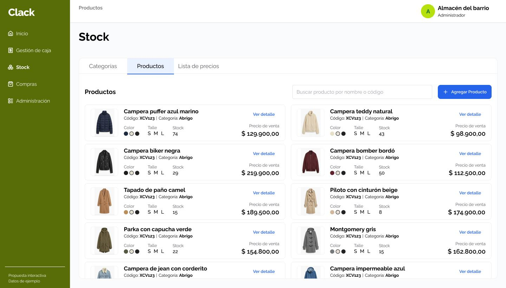
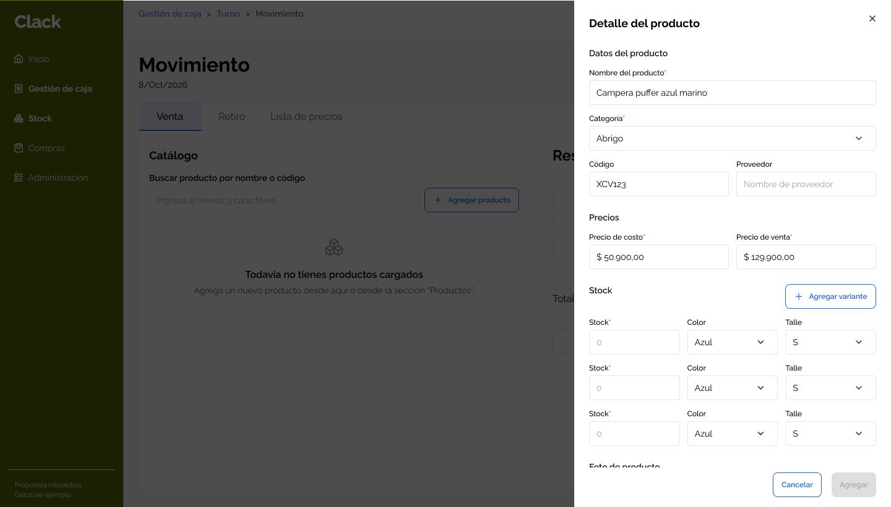
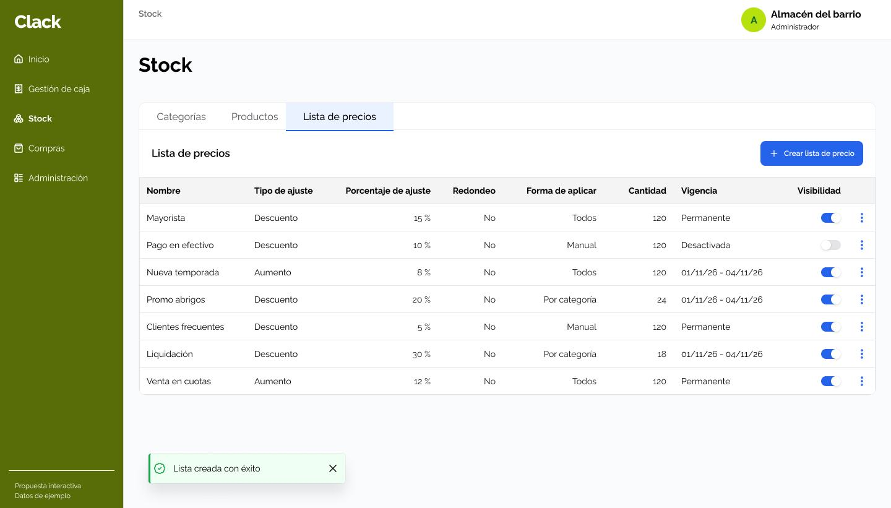
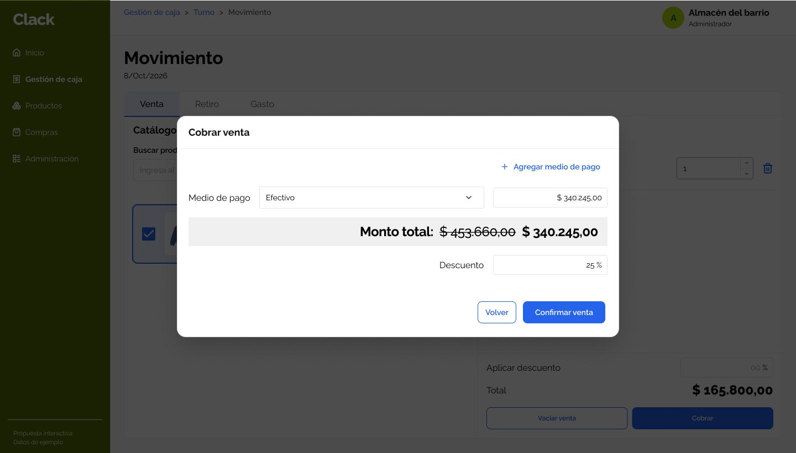
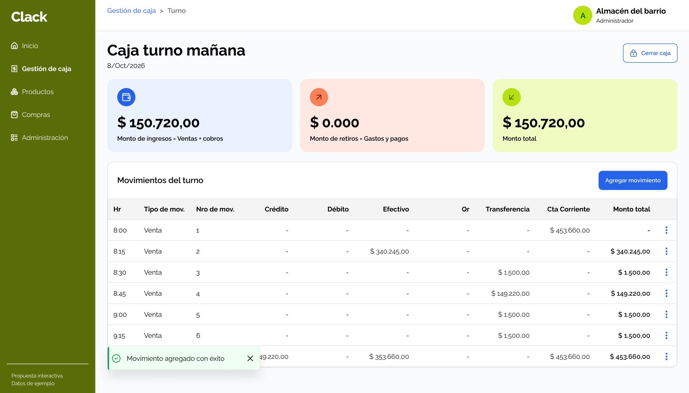

NUEVA SOLUCIÓN
Proyecto: Qué resolvimos
Diseñamos una plataforma que centraliza la gestión de ventas, caja y stock, permitiendo a los comercios administrar sus operaciones diarias desde un mismo lugar.
La solución integra el registro de ventas, el seguimiento de ingresos y gastos, la apertura y cierre de caja y el control de inventario, con el objetivo de simplificar las tareas operativas, mejorar la visibilidad del negocio y facilitar la toma de decisiones.
Contexto: Porqué era necesario
Clack es una plataforma de gestión comercial diseñada para acompañar las operaciones diarias de los comercios, integrando ventas, control de caja y gestión de stock en un mismo entorno.
El desafío del proyecto fue construir una experiencia que permitiera administrar estas tareas de manera simple y conectada, contemplando distintos momentos de la operación: desde el registro de una venta y la actualización del inventario hasta el seguimiento de movimientos y el cierre de caja.
Buscamos que los comercios pudieran tener mayor visibilidad y control sobre su actividad diaria.
Mi rol: Qué lideré
Lideré el diseño de la experiencia de usuario de Clack, trabajando en la definición del MVP y en el testeo con usuarios reales.
Mi foco estuvo en transformar procesos operativos tradicionales en flujos claros y conectados contemplando la relación entre ventas, movimientos de caja y control de stock.
Desde UX, impulsé una experiencia que priorizara la facilidad de uso, la consistencia entre funcionalidades y la claridad de la información necesaria para gestionar el negocio.

Estrategia: Cómo abordamos el problema
01. Comprender los procesos del comercio
Mapeamos los recorridos operativos para entender cómo se relacionan las tareas diarias del negocio, desde la apertura de caja y el registro de ventas hasta el seguimiento de movimientos y el cierre de jornada.
02. Simplificar y conectar las operaciones
Organizamos los flujos para que los comercios pudieran gestionar sus ventas, movimientos de dinero e inventario desde un mismo entorno, priorizando la claridad de las acciones y la continuidad entre procesos.
03. Facilitar el control y la toma de decisiones
Priorizamos la visibilidad de la información operativa, contemplando la consulta de movimientos, el control del efectivo y el seguimiento del stock para ayudar a los comercios a gestionar su actividad cotidiana con mayor confianza.
NUEVA PROPUESTA
Solución: Qué cambió
Una experiencia que conecta la gestión de productos, las ventas y el control de caja en un solo lugar.
Gestión centralizada de productos y stock.
Diseñamos una vista centralizada del catálogo que permite consultar y administrar productos, precios y disponibilidad de stock desde un mismo lugar.
La organización por categorías, la búsqueda y el acceso al detalle de cada producto facilitan la localización de información y las tareas habituales de gestión del inventario.

Configuración de productos y variantes.
Creamos un flujo de carga y edición de productos que permite configurar categorías, códigos, precios de costo y venta, variantes de stock, como color y talle.
La información se organiza en una misma interfaz para facilitar la administración de productos con diferentes características, sin perder visibilidad sobre sus existencias.

Gestión flexible de precios.
Incorporamos una herramienta para crear y administrar listas de precios con descuentos y aumentos, definiendo cómo se aplican, su vigencia y su disponibilidad.
Esto permite a los comercios adaptar sus condiciones comerciales a distintas situaciones de venta, manteniendo las reglas de precios organizadas y centralizadas.

Registro de ventas y cobros.
Diseñamos un flujo de cobro que permite seleccionar medios de pago, aplicar descuentos y revisar el importe final antes de confirmar una venta.
La experiencia prioriza la claridad de los montos y las acciones para facilitar el registro de operaciones durante la atención al cliente.

Control y seguimiento de caja.
Centralizamos la información de caja en una vista que permite consultar ingresos, egresos, monto total y movimientos del turno, con el detalle de las operaciones registradas.
Esta solución facilita el seguimiento del dinero durante la jornada y brinda al comercio información para revisar sus movimientos y realizar el cierre de caja con mayor control.
